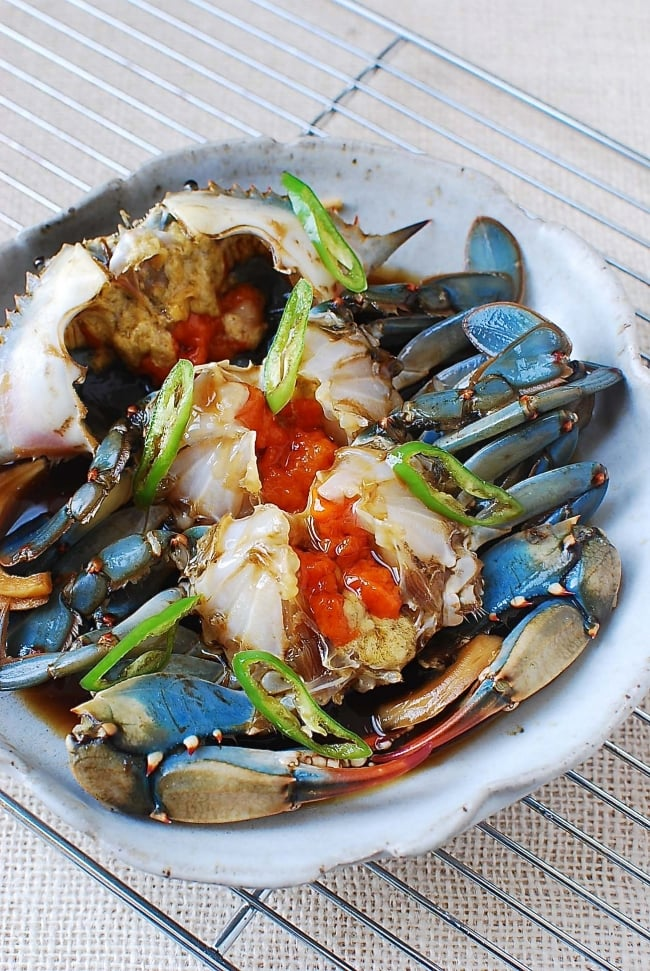

Raw Marinated Crabs

Description
Ganjang gejang is a traditional dish that's made by marinating fresh raw crabs in a mild soy-sauce based brine.
Your bowl of rice will be gone in no time as you enjoy sucking the flavor-packed crab meat out of the shell
Ingredients
- 3lbs frozen blue crabs
- 2 1/2 cup light soy sauce
- 2 1/2 cup water
- 1/2 cup green pepper
- 1/2 cup red pepper
- 1/2 cup apple
- 1/2 cup turnip
- 1/2 cup carrot
- 1/2 cup ginger
- 1/2 cup garlic
- 1/2 cup onion
- 1/2 cup tomatoe
Steps
- Bring all the marinade ingredients to a boil over medium high heat.
Reduce the heat to medium low, and continue to boil, covered, for about 20 minutes.
Remove the kelp after about 10 minutes of boiling. Strain the brine.
Discard the fruit and vegetables. Cool completely, and then refrigerate until ready to use.
- Place the crabs in an airtight container or jar. Add the chili pepper, onion and lemon slices.
Pour the brine over the crabs. Make sure all the crabs are submerged.
Weigh them down, if necessary, with a small bowl or plate that fits inside the container. Refrigerate.
Home